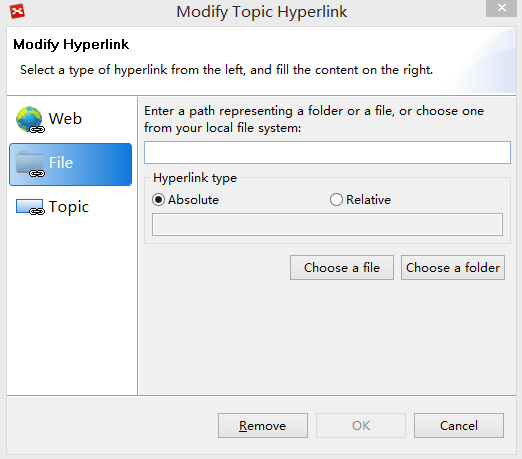

Hyerplink
Hyperlink in a topic can be used to connect the mind map to websites, folders, or local files. By this way, you can empower your mind map for better information management.
Creating a hyperlink:- Select a topic, and open the hyperlink dialog via the 4 ways below:
- Click hyperlink icon on the toolbar.
- Press 'Ctrl + H' (or Command + Shift + H for Mac users).
- Select "Modify > Hyperlink" from the menu.
- Right click on the target topic, and select "Hyperlink"
- Choose from the 3 hyperlink types below:
- "Web": Enter the URL(for example: http://www.XMind.net).
- "File": Add a local file or folder link. And set it as a relative link or absolute link.
- "Topic": Link a topic in the current workbook.
- Click "OK" to finish

Open a hyperlink:
- Click the hyperlink icon on the target topic.
Modify a hyperlink:
- Right-click on the target topic, and select "Hyperlink" to open the hyperlink dialog.
- Modify the link in the coming dialog, and click "OK" afte that.
Delete a hyperlink:
- Right-click on the target topic, and select "Hyperlink" to open the hyperlink dialog.
- Click "Remove" button on the coming dialog
Notes:
- Each topic can be given a URL that can be presented as a hyperlink (multiple URLs cannot be associated with a single topic).
- If you want to know details about hyperlink in notes, please read at Notes